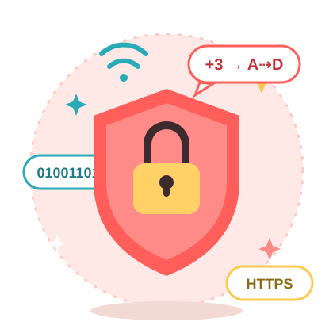
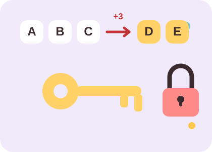

„123456” od lat na szczycie
W zestawieniach najpopularniejszych haseł z wycieków danych „123456” pojawia się co roku. Takie hasło program odgadnie w ułamku sekundy.
Bez uprzedniej wiedzy
Krótkie historie o hakerach, szyfrach i zabezpieczeniach. Do tego fiszki, quiz i odpowiedzi na najczęstsze pytania. Wystarczy chwila, żeby czegoś się dowiedzieć.

Krótko o tym, jak działają oszuści i hakerzy, oraz o prawdziwych atakach z przeszłości.
W zestawieniach najpopularniejszych haseł z wycieków danych „123456” pojawia się co roku. Takie hasło program odgadnie w ułamku sekundy.
Nazwa pochodzi od angielskiego fishing, czyli łowienia ryb. Oszuści zarzucają przynętę, np. fałszywą wiadomość, i czekają, aż ktoś poda swoje dane.
Autor komiksu xkcd pokazał w 2011 roku, że cztery losowe, zwykłe słowa, np. kot-rower-zupa-lampa, są trudniejsze do złamania niż krótkie hasło pełne znaków specjalnych. Dodatkowo łatwiej je zapamiętać.
E-mail z „wyznaniem miłosnym” miał załącznik, który wyglądał jak zwykły plik tekstowy, a w rzeczywistości był programem. Po otwarciu rozsyłał się dalej do kontaktów ofiary. W kilka dni zainfekował miliony komputerów, a straty szacowano na miliardy dolarów.
Ten ransomware szyfrował pliki i żądał okupu w kryptowalucie. Zaatakował około 200 tysięcy komputerów w ponad 150 krajach, także szpitale w Wielkiej Brytanii. Rozprzestrzeniał się przez luki w niezaktualizowanym systemie Windows.
Deep web to wszystko, czego nie indeksują wyszukiwarki, np. poczta czy konto bankowe. Dark web to jego niewielka, celowo ukryta część, dostępna przez Tor i adresy .onion
Wiele darmowych serwisów zarabia na reklamach dopasowanych do tego, co wiedzą o użytkowniku. Dlatego warto czasem sprawdzić ustawienia prywatności.
Wiele ataków zaczyna się od jednej wiadomości i jednego kliknięcia. To tak zwana inżynieria społeczna: oszuści wykorzystują pośpiech, ciekawość i strach. Zanim klikniesz, zatrzymaj się na chwilę.
Kryptografia zajmuje się ukrywaniem treści wiadomości, od listów wojennych po dzisiejsze zakupy w internecie. Oto kilka ciekawych momentów z jej historii:

Juliusz Cezar przesuwał każdą literę o trzy miejsca w alfabecie: A zmienia się w D, B w E, a słowo ZASADA w CDVDGD. Dziś taki szyfr da się złamać w kilka minut, bo wystarczy sprawdzić wszystkie możliwe przesunięcia.
Przez ponad 300 lat uważano go za niemożliwy do złamania. Dopiero w 1863 roku Friedrich Kasiski opisał sposób na jego złamanie: wystarczyło znaleźć powtarzające się fragmenty zaszyfrowanego tekstu.
Marian Rejewski, Jerzy Różycki i Henryk Zygalski złamali szyfr niemieckiej maszyny Enigma w 1932 roku. W 1939 roku przekazali swoją wiedzę Francuzom i Brytyjczykom, co bardzo pomogło w późniejszych pracach w Bletchley Park.
Szkocka królowa wysyłała zaszyfrowane listy do swoich zwolenników. Ludzie angielskiej królowej Elżbiety I złamali szyfr i odczytali je. Listy były ważnym dowodem w jej procesie, a w 1587 roku Maria została stracona.
Kliknij fiszkę, żeby zobaczyć odpowiedź. Kolejność jest losowa, a przyciskiem „Tasuj” możesz ją zmienić.
Fiszka 1 z 12
Quiz losuje pięć pytań z puli dwunastu, więc każda próba wygląda trochę inaczej. Na końcu zobaczysz wynik i podsumowanie.
Quiz ma pięć losowych pytań z puli dwunastu. Przy każdym wybierasz jedną odpowiedź, a na końcu zobaczysz wynik.
Nie zawsze. Kłódka oznacza tylko, że połączenie ze stroną jest szyfrowane (HTTPS), więc nikt po drodze nie podejrzy przesyłanych danych. Nie mówi nic o uczciwości strony, bo fałszywe strony też mogą mieć kłódkę. Zawsze sprawdzaj dokładnie adres.
Połącz cztery lub pięć zwykłych słów, np. „kot-rower-zupa-lampa-dom”. Im dłuższe hasło, tym lepiej. Najlepiej korzystać z menedżera haseł, który tworzy i przechowuje hasła za ciebie. Wtedy pamiętasz tylko jedno hasło główne.
Od najbezpieczniejszej: klucz sprzętowy, potem aplikacja z kodami, a na końcu SMS. SMS jest lepszy niż nic, ale można go przechwycić, jeśli ktoś przejmie twój numer telefonu. Warto też zapisać kody awaryjne w bezpiecznym miejscu.
Nie podawaj żadnych danych i zamknij stronę. Jeśli już coś wpisałeś, od razu zmień hasło i włącz 2FA. Jeśli podałeś dane karty, skontaktuj się z bankiem. Podejrzaną wiadomość możesz zgłosić do CERT Polska.
W otwartej sieci ktoś może podsłuchiwać ruch albo podsyłać fałszywe strony. Korzystaj ze stron z HTTPS, nie loguj się do banku i nie rób płatności. Jeśli musisz, użyj sieci komórkowej w telefonie albo zaufanego VPN.
Deep web to wszystko, czego nie znajdziesz w wyszukiwarce, np. twoja poczta czy konto bankowe. Dark web to niewielka część internetu dostępna przez specjalne programy, takie jak Tor. Zwykle korzystasz z deep webu codziennie, nawet o tym nie wiedząc.